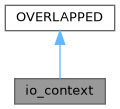

Loading...
Searching...
No Matches
io_context Struct Reference
Overlapped context extended with additional metadata for IOCP. More...
#include <socket_utils.hpp>
Inheritance diagram for io_context:

Collaboration diagram for io_context:

Public Member Functions | |
| io_context () | |
Public Attributes | |
| io_operation_type | operation |
| Operation type (recv or send). | |
| WSABUF | wsa_buf |
WSABUF pointing at the buffer storage. | |
| std::vector< char > | buffer |
| Backing storage for the packet (includes header + payload). | |
| sockaddr_storage | remote_addr |
| Storage for the remote peer address. | |
| int | remote_addr_len |
| Length of the remote address in bytes. | |
Detailed Description
Overlapped context extended with additional metadata for IOCP.
Instances of io_context are allocated per outstanding operation and posted to Winsock APIs. They embed a WSABUF and backing buffer, the remote peer address storage and an io_operation_type to disambiguate completion handling.
Constructor & Destructor Documentation
◆ io_context()
|
inline |
Member Data Documentation
◆ buffer
| std::vector<char> io_context::buffer |
Backing storage for the packet (includes header + payload).
◆ operation
| io_operation_type io_context::operation |
Operation type (recv or send).
◆ remote_addr
| sockaddr_storage io_context::remote_addr |
Storage for the remote peer address.
◆ remote_addr_len
| int io_context::remote_addr_len |
Length of the remote address in bytes.
◆ wsa_buf
| WSABUF io_context::wsa_buf |
WSABUF pointing at the buffer storage.
The documentation for this struct was generated from the following file:
- src/common/socket_utils.hpp